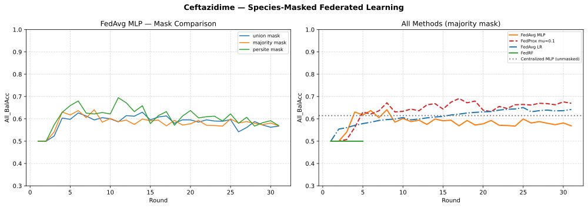
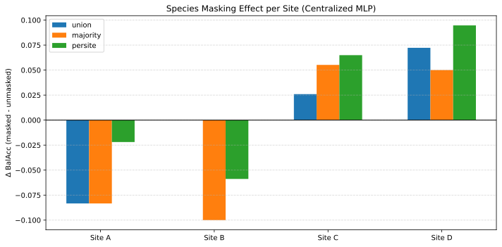
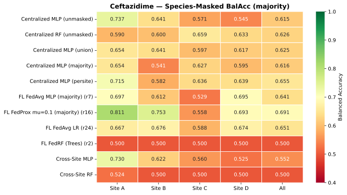
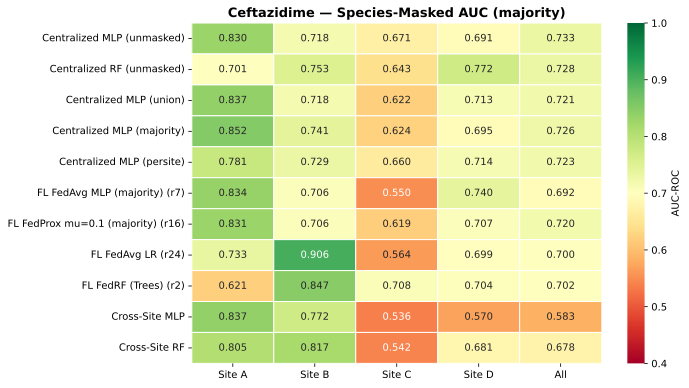

Federated Ceftazidime × E. coli — Results
Flower (flwr)-based Federated learning across 4 DRIAMS sites (A/B/C/D), 30 rounds, 4 strategies. Extends the non-federated Ceftazidime analysis (Progressive Analysis Notebooks) to a federation setting.
All numbers on this page come from the latest species-masked 06-03c run
(Results/06-03c-Results/results/, 2026-07-20), whose data-driven mask
selection picked majority; a second run of the same pipeline is used as a
robustness check below. The Ceftriaxone counterpart lives in
06b.
Note
Provenance — archived (pre-fix) run. These numbers come from the
earlier protocol: the client penalty summed per-tensor norm(2)
distances instead of their squares, so the effective regularisation
differed from the canonical (mu/2) * ||w - w_global||^2. The 06a
notebooks now implement the corrected penalty, but this Ceftazidime page
is retained as the historical record; the corrected-protocol federated
numbers are on the 06b federated page.
Final Results
Method |
BalAcc |
AUC |
Peak |
|---|---|---|---|
Centralized MLP (unmasked) |
0.615 |
0.733 |
- |
Centralized MLP (union) |
0.625 |
0.721 |
- |
Centralized MLP (majority) |
0.616 |
0.726 |
- |
Centralized MLP (persite) |
0.655 |
0.723 |
- |
Centralized RF (unmasked) |
0.626 |
0.728 |
- |
FL FedAvg MLP (majority) |
0.641 |
0.692 |
r7 |
FL FedProx μ=0.1 (majority) |
0.691 |
0.720 |
r16 |
FL FedAvg LR |
0.651 |
0.700 |
r30 |
FL FedRF (Trees) |
0.500 |
0.702 |
r2 |
Cross-Site MLP |
0.552 |
0.583 |
- |
Cross-Site RF |
0.500 |
0.678 |
- |
BalAcc and AUC are the pooled four-site (“All”) values; “Peak” is the round at which the federated strategy scored best.


Left: FedAvg MLP under the three species masks — the round-by-round mask
comparison used for mask selection. Right: the final methods under the
winning majority mask, with the unmasked centralized MLP as reference.
Key Findings
FedProx Leads, and Federated Beats Centralized
FedProx μ=0.1 reaches BalAcc 0.691 (AUC 0.720, peak round 16) — +0.050 over FedAvg MLP (0.641) and +0.036 over the best centralized variant (persite, 0.655; unmasked 0.615). FedAvg LR is competitive (0.651) and still climbing at round 30, while FedAvg MLP peaks early (round 7) and drifts.
This is the opposite ordering from Ceftriaxone (06b), where the centralized MLP stayed ahead of every federated strategy. On the smaller Ceftazidime × E. coli cohort, local per-site training plus aggregation is the strongest approach available: all three main federated strategies clear the unmasked centralized MLP.
The gains concentrate on the weakest sites: FedProx lifts Site B to 0.753 (centralized unmasked: 0.641) and FedAvg lifts Site D to 0.695 (0.545), while Site C remains the bottleneck (0.529–0.627 across all methods).
Mask Choice and Its Limits
06-03c selects the mask with the highest worst-site improvement of the
FedAvg MLP over unmasked; here the winner was majority. The figure below
shows the mask effect per site for the centralized MLP: masking helps Sites C
and D but costs Sites A and B, so the worst-site criterion is trading one
site against another — and it is sensitive to run noise (the second run
picked none, see below).


Effect of the three species masks on the centralized MLP, per site (masked minus unmasked Balanced Accuracy). Site C/D improve; Site A/B degrade.
FedRF Threshold Collapse
FedRF matches the MLP strategies on ranking (AUC 0.702) but its Balanced Accuracy is pinned at exactly 0.500 on every site: at the 0.5 decision threshold all predictions land in one class, exactly as in the Ceftriaxone run. Tree accumulation works (the ensemble grows each round); the failure is in threshold calibration, not learning.
Cross-Site as Lower Bound
Training on Site A alone and testing on B/C/D gives BalAcc 0.552 (AUC 0.583). FedProx improves on that by +0.139 BalAcc — the value of collaboration without sharing raw spectra, consistent with 03’s cross-site findings.
Per-Site Heatmaps


Pooled Balanced Accuracy per method (rows) and site (columns); the All column is the pooled four-site value.


Same layout for AUC-ROC.
Robustness: A Second 06-03c Run
An earlier run of the same pipeline
(Results/06-03c-Results/run1-mask-none/, 2026-07-20 04:55) selected the
none mask and lands at FedProx 0.700/0.748, FedAvg MLP 0.678/0.725,
FedAvg LR 0.675/0.731, FedRF 0.500/0.724, centralized unmasked MLP
0.659/0.773 and cross-site MLP 0.553/0.551.
The two runs agree on the essentials: FedProx is the best federated strategy
and beats the best centralized variant by a similar margin (+0.036 and +0.038
BalAcc); every non-FedRF federated strategy clears the unmasked centralized
MLP; FedRF collapses to 0.500 BalAcc; and the cross-site baseline sits far
below both. They disagree on the mask winner (majority vs none) and
on absolute levels by ~0.01–0.05, which is the same order as the federated
gains — mask selection should be read as weak evidence.
Strategy Overview
Drug / Pathogen |
Ceftazidime / Escherichia coli |
Architecture |
MLP: 6000 → 512 → 256 → 128 → 2 |
Strategies |
|
Rounds |
30 |
Baselines |
Centralized MLP (4 Species masking variants), Centralized RF, Cross-site evaluation |
Species Masking Variants
The four centralized baseline variants above are produced by
06-03c via a 4-phase pipeline (see 06-03c: Species-Masked Federated
Learning).
noneFull training set, no species filtering — the true upper bound.
unionOnly species present in at least one test site.
majorityOnly E. coli (the target species). The purest comparison.
persitePer-site species filtering, simulating local client distributions.
See Species masking for full descriptions.
For the Ceftriaxone results that informed these expectations, see 06b.
06-03c: Species-Masked Federated Learning
06-03c is the most sophisticated notebook in the 06a pipeline.
Unlike 06-03a/03b which operate on E. coli only, 06-03c works on
all species and uses a data-driven approach to find the fairest
centralized-vs-federated comparison. The notebook runs in four phases:
- Phase 1 — Per-site species RF classifiers
Trains a Random Forest on each DRIAMS site to identify which m/z bins are predictive of species (not drug resistance). The top 500 most important bins become that site’s “species signature” — bins strongly associated with the site’s bacterial ecology.
- Phase 2 — Three mask strategies computed
Each strategy produces a set of bins to zero out from the training data, removing species-specific spectral information:
none
No masking — full 6000 bins. The true upper bound.
union
Bins flagged by any site’s species RF. Removes species-identifiable bins across all sites.
majority
Bins flagged by ≥2 sites. Removes broadly informative species bins (more conservative).
persite
Per-site masking — each site removes its own flagged bins. Simulates per-client local species distributions.
- Phase 3 — Mask comparison and selection
Trains a FedAvg MLP on each of the 4 masked datasets. For each strategy, computes the per-site improvement over unmasked. Selects the mask with the highest worst-site delta:
best_strategy = argmax( min_site(BalAcc_masked - BalAcc_unmasked) )
This ensures the chosen mask helps the site that needs it most.
- Phase 4 — Full FL pipeline with best mask
Switches all active data to the winning mask and runs:
- Output:
mask_delta.pdf— bar chart showing per-site improvement of each mask vs. unmasked. Saved RF species classifiers are reusable by 08.fedprox_mu{mu}_per_round.csv— Per-round validation metrics (BalAcc, AUC) per site.fedprox_mu{mu}_train_loss_per_round.csv— Per-site + aggregated training loss per round.fedavg_train_loss_per_round.csv— Aggregated training loss from FedAvg MLP (best mask).- Key difference from 06-03a:
Aspect
06-03a
06-03c
Species
E. coli only
All species
Masking
Pre-configured mask
Data-driven mask selection
Purpose
Baseline FL experiment
- Fair comparison accounting
for species distribution
Loss data
Validation only
Training + validation per site, per round
Training Loss Monitoring
The 06-03c notebook captures per-site training loss (cross-entropy)
at every round alongside the existing validation metrics. This enables:
Overfitting diagnosis — comparing train vs. validation loss curves to detect when the model starts memorizing local data
Site-specific training dynamics — identifying which hospitals learn fastest/slowest, revealing data quality or size differences
Proximal regularisation effect — quantifying how FedProx μ influences local optimisation vs. standard FedAvg
Training loss is extracted directly from each client’s fit() return
value (which already computes per-epoch cross-entropy). For FedProx,
this is captured via the custom CheckpointFedProx.aggregate_fit
override, which records per-site and aggregated losses before model
aggregation. For FedAvg, a fit_metrics_aggregation_fn is
registered on the strategy to collect the mean training loss across clients.
Notebooks
06-03a-Ceftazidime-E-coli-Federated.ipynb — Basic FL (E. coli only): FedAvg + FedProx + FedLR + FedRF
06-03b-Ceftazidime-E-coli-Federated.ipynb — FL variant B
06-03c-Species-Masked-Ceftazidime-Federated.ipynb — Species-masked FL (all species): 4-phase pipeline with data-driven mask selection. Produces the centralized MLP (none/union/majority/persite) baselines.
retry_fedprox.ipynb — FedProx μ retry utility
Files
Results/06-03c-Results/results/— final run (numbers on this page):final_results.csv, per-round CSVs,convergence.pdf,heatmap_balacc.pdf,heatmap_auc.pdf,mask_delta.pdfResults/06-03c-Results/run1-mask-none/results/— earlier robustness runResults/02-Run/results/— basic (E. coli-only) FL runResults/06-02-Runs/— non-federated iterative runs (see Progressive Analysis Notebooks)